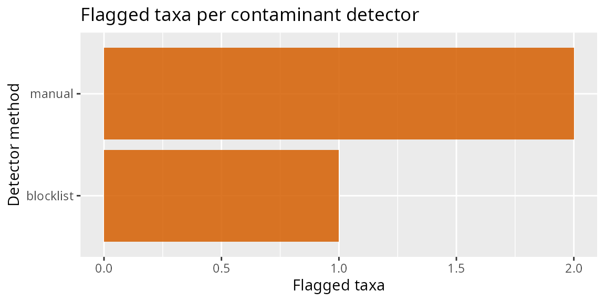

library(tidypq)
#> Loading required package: phyloseq
#> Loading required package: MiscMetabar
#> Loading required package: ggplot2
#> Loading required package: dplyr
#>
#> Attaching package: 'dplyr'
#> The following objects are masked from 'package:stats':
#>
#> filter, lag
#> The following objects are masked from 'package:base':
#>
#> intersect, setdiff, setequal, union
library(MiscMetabar)The detect-then-filter design
tidypq splits contamination handling into two steps:
-
Detect. Each
identify_contam_*_pq()function flags suspect taxa using a different signal, and returns acontam_tbl– a tibble with one row per flagged taxon, amethodcolumn, and method-specific evidence columns. A detector never modifies the phyloseq object. -
Filter. The single verb
filter_contam_pq()consumes anycontam_tbl(or several, combined) and removes the flagged taxa.
| Detector | Signal | Needs |
|---|---|---|
identify_contam_blocklist_pq() |
genus on a known-contaminant blocklist | tax_table |
identify_contam_corr_pq() |
abundance correlates negatively with depth | counts |
identify_contam_primer_pq() |
representative sequence embeds a primer |
refseq, Biostrings |
identify_contam_chimera_pq() |
chimeric sequence (dada2 or vsearch) |
refseq, dada2/vsearch |
identify_contam_negcontrol_pq() |
occurrence pattern in negative controls | control samples |
“Contaminant” here is a broad umbrella: technical artefacts (chimeras, primer read-through), reagent/lab contaminants, and cross-sample contaminants are all sub-types flagged by one detector or another.
A first detector
The blocklist detector needs only a taxonomy table.
data_fungi is fungal, so the default bacterial blocklist
matches nothing; we extend it with a genus present in the data for
illustration.
flagged <- identify_contam_blocklist_pq(data_fungi, extra_genera = "Mortierella")
#> ℹ blocklist: flagged 1 of 1420 taxa from 84 blocklist genera.
flagged
#> contam_tbl: 1 flagged taxon from method "blocklist"
#> # A tibble: 1 × 5
#> taxon method genus total_reads prevalence
#> <chr> <chr> <chr> <dbl> <dbl>
#> 1 ASV1215 blocklist Mortierella 118 1A contam_tbl always starts with taxon and
method; the remaining columns are the evidence specific to
that detector.
names(flagged)
#> [1] "taxon" "method" "genus" "total_reads" "prevalence"Removing flagged taxa
filter_contam_pq() removes the flagged taxa by name and
returns the cleaned phyloseq object. When nothing is flagged it returns
the object unchanged.
data_clean <- filter_contam_pq(data_fungi, flagged)
#> ! Removing 1 contaminant taxon flagged by method "blocklist".
data_clean
#> phyloseq-class experiment-level object
#> otu_table() OTU Table: [ 1419 taxa and 185 samples ]
#> sample_data() Sample Data: [ 185 samples by 7 sample variables ]
#> tax_table() Taxonomy Table: [ 1419 taxa by 12 taxonomic ranks ]
#> refseq() DNAStringSet: [ 1419 reference sequences ]Combining detectors
Because every detector returns the same object, their outputs compose
with rbind() – evidence columns missing from one detector
are filled with NA, and filter_contam_pq()
removes the union of the flagged taxa.
blocklist <- identify_contam_blocklist_pq(
data_fungi,
extra_genera = "Mortierella",
verbose = FALSE
)
# A second (here, hand-built) contam_tbl standing in for another detector
manual <- new_contam_tbl(tibble::tibble(
taxon = taxa_names(data_fungi)[1:2],
method = "manual"
))
combined <- rbind(blocklist, manual)
combined
#> contam_tbl: 3 flagged taxons from methods "blocklist" and "manual"
#> # A tibble: 3 × 5
#> taxon method genus total_reads prevalence
#> <chr> <chr> <chr> <dbl> <dbl>
#> 1 ASV1215 blocklist Mortierella 118 1
#> 2 ASV2 manual NA NA NA
#> 3 ASV6 manual NA NA NA
data_clean <- filter_contam_pq(data_fungi, combined)
#> ! Removing 3 contaminant taxons flagged by methods "blocklist" and "manual".Diagnostics
A lightweight overview of how many taxa each method flagged is
available through the plot() / autoplot()
method on a contam_tbl. Publication-grade contamination
figures live in the companion ggplotpq package and consume
the same contam_tbl.
plot(combined)
Negative-control classification
When the design includes negative/blank controls,
identify_contam_negcontrol_pq() classifies the taxa seen in
those controls into sub-types. Only artifact and
lab_contaminant are flagged by default; add
sample_contaminant to flag_categories to be
more aggressive.
pq <- mutate_samdata_pq(
data_fungi,
is_control = sample_sums(.) < sort(sample_sums(.))[4]
)
nc <- identify_contam_negcontrol_pq(pq, is_control)
#> ℹ negcontrol: flagged 0 taxa (artifact=0, lab_contaminant=0).
nc
#> ✔ contam_tbl: no flagged taxa.
#> # A tibble: 0 × 9
#> # ℹ 9 variables: taxon <chr>, method <chr>, subtype <chr>, total_reads <dbl>,
#> # reads_in_neg <dbl>, reads_in_samples <dbl>, n_neg_samples <dbl>,
#> # n_non_neg_samples <dbl>, ratio_non_neg_to_neg <dbl>Abundance-, sequence-, and chimera-based detectors
The remaining detectors follow the identical pattern; they are shown here without evaluation because they need extra data or packages.
# Correlation of relative abundance with sequencing depth (GRIMER-inspired)
corr <- identify_contam_corr_pq(data_fungi, contam_threshold = -0.5)
# Taxa whose representative sequence embeds a primer (needs Biostrings + refseq)
primers <- c(fwd = "CCCTACGGGGTGCASCAG", rev = "GGACTACVSGGGTATCTAAT")
prim <- identify_contam_primer_pq(data_fungi, primers)
# Chimeras, de novo (dada2) or reference-based (vsearch)
chim <- identify_contam_chimera_pq(data_fungi, method = "dada2")
# One filter call removes everything flagged
data_clean <- filter_contam_pq(
data_fungi,
rbind(corr, prim, chim)
)Control-based decontamination (a different tool)
decontam_control_samples_pq() and
decontam_control_taxa_pq() are not detectors and
do not produce a contam_tbl. Instead of flagging whole
taxa, they estimate a background level from a control set and
zero out individual occurrences at or below it – a
per-cell correction. The control reference is either negative/blank
control samples or spike-in control taxa.
# Background estimated from control SAMPLES, per taxon
pq <- mutate_samdata_pq(data_fungi, is_control = sample_sums(.) < 500)
decontam_control_samples_pq(pq, is_control)
# Background estimated from control TAXA (e.g. spike-ins), per sample
decontam_control_taxa_pq(data_fungi, Genus == "Tintelnotia")